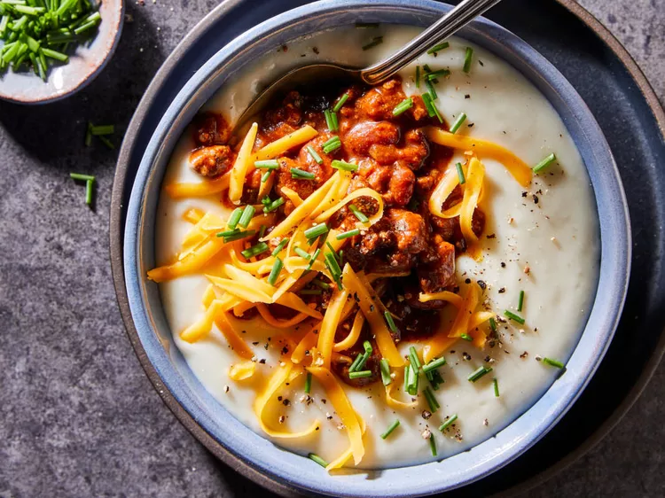

Chili-Topped Potato Soup

Chili’s Baked Potato Soup is creamy, hearty,
and delicious comfort food. Topped with bacon,
cheddar cheese, and chives,
this is a great loaded potato soup to enjoy for lunch or dinner.
Ingridients
- 3 pounds baking potatoes
- 1 pound lean ground beef
- 1/2 cup chopped onion
- 3 cloved garlic minced
- 1 (15 ounce) can tomato sauce
- 1 (15 ounce) can chili beans
- 1 (1.25 ounce) package chili seasoning mix
- 1 cup low-sodium chicken broth
- 1/4 cup butter
- 4 cups milk
- 1 cup buttermilk
- 1 teaspoon salt
- 1/2 teaspoonground black pepper
- 1 1/2 cups shredded white Cheddar cheese
- 1/2 cup sour cream
- chopped fresh chives(optional)
Steps
- Preheat oven to 425 degrees F (220 degrees C).
Prick potatoes with a fork. Transfer to a 10x15-inch baking pan.
- Bake in the preheated oven, turning once, until tender, about 1 hour.
- Meanwhile, for chili, add ground beef,
onion, and garlic to a large saucepan. Cook over medium heat,
stirring to break
up lumps, until meat is browned and onion is tender, about 10 minutes. Drain grease.
- Add tomato sauce, chili beans,
and chili seasoning mix to saucepan.
Bring to a boil. Reduce heat to low and simmer,
covered, at least 10 minutes to let flavors meld.
- When potatoes are cool enough to handle,
use a spoon to scoop potato pulp into large bowl.
(You should have about 4 cups pulp). Discard skins. Add broth to bowl. Mash potatoes until smooth.
- Melt butter in a 4- to 5-quart Dutch oven over medium heat.
Stir in flour and cook, whisking constantly to make a light
roux, about 2 minutes. Gradually whisk in milk, 1 cup at a time.
Cook, whisking constantly, until lightly thickened.
Stir in potato mixture, buttermilk, salt, and pepper.
Cook, stirring frequently, until heated through,
3 to 5 minutes(soup will be very thick).
Remove from heat and gradually stir in 1 cup cheese.
- Divide soup among bowls. Top with chili, sour cream,
remaining 1/2 cup cheese, and chives (if using).